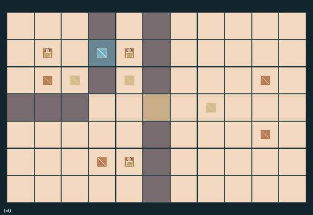

GI199 · Icehouse Service

Serve two hot courses and two chilled desserts using three trays, six total ingredients, two portable ice boxes and a finite cooling/fuel reserve.
Identity and original contract
3 independently actionable roles; 14 discrete commands per role; 209 native observation columns per role; original horizon 180 steps. Declared per-step reward range: -2 to 6. Observation regime: fully_observable.
Source SHA-256: 0987325e3c11e6e78000a5abc5e91cdd11d68416740d5a48371cc66885ab01b4
The objective, rewards, population, map and horizon remain original. A preview is not a success claim.
Objective and gameplay
Serve two hot courses and two chilled desserts using three trays, six total ingredients, two portable ice boxes and a finite cooling/fuel reserve.
A moved box changes both walkability and nearby tray temperatures; it can preserve a peer dessert but chill another peer hot course. Door access spends shared cooling, while cooling/refill/processing/washing and one shared corridor couple the cooks' schedules.
- The kitchens and service area connect only through corridor (5,3). Loose ice boxes block walking; loose trays do not.
- Each cook carries one tray or ice box. Pick boxes from an adjacent cell; trays from your own cell.
- Hot processing takes four ticks. Dessert needs three consecutive processing ticks while cooled to temperature at most one.
- A hot hatch requires temperature at least five; the dessert hatch requires at most one.
- Cold-room coverage and charged boxes cool nearby trays. A box can preserve dessert and also overcool a teammate's hot dish.
- An open door, active cold preparation and warm cookware in the cold room consume shared cooling.
- A box refill transfers room cooling into portable charge. Compressor fuel is finite; washing restores trays, not ingredients.
- Food ages to spoilage at 30. Serving leaves dirty cookware, which must be washed before another load.
Ending: Success when both served counts reach two. Failure when remaining pantry stock plus raw/processing/ready portions of either type cannot supply that type's remaining demand. Spoiled food is irrecoverable.
What this game explores
Resource commons & externalities: An action changes a persistent resource or burden that another role also encounters. Compare extraction with maintenance and record the downstream resource trajectory.
Complementary production & service: A useful outcome requires ordered stages, scarce equipment or another role's capability. Measure real completed products and resource circulation rather than counting intermediate actions as success.
Joint transport & shared access: Positions, load geometry, occupancy and persistent access constrain whose action can succeed next. Distinguish physical handoff, shared controls and simultaneous force from a cosmetic cooperation label.
These are questions supported by rule structure, not observed learning effects.
Play it: operating walkthrough
crucibles play --game gi199Keep Python running and open its printed address. Select this game, set a seed and press Create session. The game itself is always English.
Assign a role range to Host with Assign / take over, or Assign all roles. Invite a second participant with Create player invitation, then assign a disjoint subset. Every original role is available.
For every owned role choose a legal command and press Queue. Arrow keys / WASD queue a declared directional action for the current role camera when available. Space or Advance one joint step advances everyone together. Non-directional games use the selectors.
Unqueued roles use the labelled untrained uniform-legal policy. Take over or release roles before the next step without resetting. Full-state debug is privileged and permanently logged; role cameras preserve permissions. Close the session to retain logs. Server restart does not restore sessions.
Complete command reference
IDs and English labels exactly match the manifest. Availability depends on role, resources, location and phase. An available action can still have no productive effect.
0·Wait
1·North
2·East
3·South
4·West
5·Take nonprocessing tray here or put held tray down
6·Take adjacent ice box or put held box down
7·Load hot ingredient onto clean tray at pantry
8·Load dessert ingredient onto clean tray at pantry
9·Start/reheat matching tray at hot stove or cold-prep station
10·Serve ready held course at matching hatch and temperature
11·Toggle adjacent cold-room door when closure is clear
12·Wash held dirty/spoiled tray at sink, or crank compressor empty-handed
13·Fill held ice box inside cold room using stored room cooling
Roles and capability identifiers
These original role names describe capabilities, not interchangeable skins. Check each owned role's legal selector before planning handoffs.
agent_0·Hot-station cook
agent_1·Cold-prep cook
agent_2·Porter and service cook
Information and observation permissions
Fully observable. The flat public obs_keys vector includes every cook/item position, carrier, type, food, processing state, temperature, freshness, clock, portable charge, map, door state, cooling/fuel store, station, ingredient and service counter, and per-step event. The chilled flag reports cooling actually applied on the just-finished step, not a promise of cooling after reserves deplete. All active entities are visible to all roles; human and policy information is identical.
The GIF is full-state debug and may reveal hidden entities or private state. Train on obs[agent], not the picture, state tree or another role's private row. Field slices and visibility are in the original manifest.
Reinforcement-learning integration
import jax
from crucibles_jaxmarl import make
env = make("gi199")
key = jax.random.PRNGKey(0)
key, rk, ak, sk = jax.random.split(key, 4)
obs, state = jax.jit(env.reset)(rk)
actions = env.sample_actions(ak, state)
obs, state, rewards, dones, info = jax.jit(env.step_env)(sk, state, actions)
done = dones["__all__"]Observations are float32 vectors of width 209; actions are scalar int32; masks have 14 entries. Supply all 3 roles each transition. Masked sampling is an engineering reference, not a trained learner.
step_env retains terminal data without reset. step performs outer autoreset and keeps terminal data in info["raw_state"] and info["raw_observation"]. Use dones["__all__"] for episode boundaries; separate completion, failure and time limit in analysis.
JIT or vmap equal identities and shapes. Split independent reset, policy and transition keys. Group different shapes explicitly; do not shrink the population or horizon. Host rendering stays outside training.
Training questions and fair evaluation
Define valid completion from the objective before fitting. Preserve original rewards and also report real deliveries/services, losses, resource state, unresolved episodes and per-role returns. Animation is not a reward signal.
An action changes a persistent resource or burden that another role also encounters. Compare extraction with maintenance and record the downstream resource trajectory.
A useful outcome requires ordered stages, scarce equipment or another role's capability. Measure real completed products and resource circulation rather than counting intermediate actions as success.
Positions, load geometry, occupancy and persistent access constrain whose action can succeed next. Distinguish physical handoff, shared controls and simultaneous force from a cosmetic cooperation label.
Compare memory, communication or centralized critics under matched actor information. Declare critic access; keep actor inputs role-filtered. Match partner/opponent distributions, masks, compute and checkpoint selection. Final tests never enter fitting or selection.
Independent training runs or source-pairing blocks are inferential units; episodes from one policy are not independent training replications. Save hashes, keys, versions, device, time and cost. Negative, zero, failed and indeterminate outcomes are valid. No trained checkpoint or target score is supplied.
Classification and evidence
Overlapping editorial labels are reading aids, not proof of novelty, difficulty, strategic equivalence or learning effects.
- Resource commons & externalities
- Evidence
manifest.task.objective: Serve two hot courses and two chilled desserts using three trays, six total ingredients, two portable ice boxes and a finite cooling/fuel reserve.
- Complementary production & service
- Evidence
manifest.task.objective: Serve two hot courses and two chilled desserts using three trays, six total ingredients, two portable ice boxes and a finite cooling/fuel reserve.
- Evidence
manifest.task.interaction: A moved box changes both walkability and nearby tray temperatures; it can preserve a peer dessert but chill another peer hot course. Door access spends shared cooling, while cooling/refill/processing/washing and one shared corridor couple the cooks' schedules.
- Evidence
manifest.task.observation_access: Fully observable. The flat public obs_keys vector includes every cook/item position, carrier, type, food, processing state, temperature, freshness, clock, portable charge, map, door state, cooling/fuel store, station, ingredient and service counter, and per-step event. The chilled flag reports cooling actually applied on the just-finished step, not a promise of cooling after reserves deplete. All active entities are visible to all roles; human and policy information is identical.
- Joint transport & shared access
- Evidence
manifest.task.observation_access: Fully observable. The flat public obs_keys vector includes every cook/item position, carrier, type, food, processing state, temperature, freshness, clock, portable charge, map, door state, cooling/fuel store, station, ingredient and service counter, and per-step event. The chilled flag reports cooling actually applied on the just-finished step, not a promise of cooling after reserves deplete. All active entities are visible to all roles; human and policy information is identical.
Source, receipts and preview limits
The world-only English GIF replays saved untrained legal actions through the original kernel. At most 25 actual endpoints include initial and terminal state; no invented interpolation. It is full-state debug, not the role observation.
Original source, observation slices, manifest and mechanism
Native receipt · Presentation receipt
Engineering passes do not establish learning. Nonzero floating differences remain recorded and undetermined; no new tolerance was introduced. Human scores remain unverified.